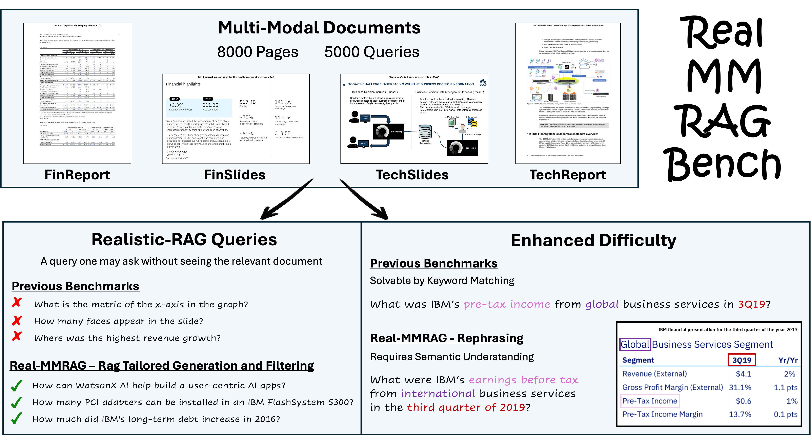
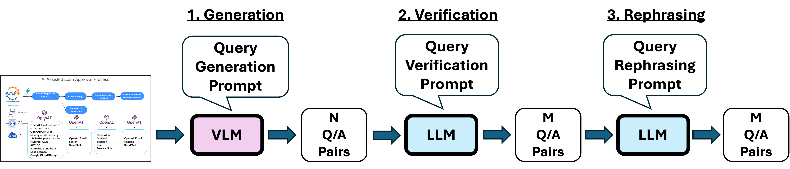

REAL-MM-RAG
A Real-World Multi-Modal Retrieval Benchmark
1IBM Research Israel 2Weizmann Institute of Science

Proposed Real-MM-RAG Benchmark

Abstract
Accurate multi-modal document retrieval is crucial for Retrieval-Augmented Generation (RAG), yet existing benchmarks do not fully capture real-world challenges with their current design. We introduce REAL-MM-RAG, an automatically generated benchmark designed to address four key properties essential for real-world retrieval: (i) multi-modal documents, (ii) enhanced difficulty, (iii) Realistic-RAG queries, and (iv) accurate labeling. Additionally, we propose a multi-difficulty-level scheme based on query rephrasing to evaluate models' semantic understanding beyond keyword matching. Our benchmark reveals significant model weaknesses, particularly in handling table-heavy documents and robustness to query rephrasing. To mitigate these shortcomings, we curate a rephrased training set and introduce a new finance-focused, table-heavy dataset. Fine-tuning on these datasets enables models to achieve state-of-the-art retrieval performance on the REAL-MM-RAG benchmark. Our work offers a better way to evaluate and improve retrieval in multi-modal RAG systems while also providing training data and models that address current limitations.
Benchmark Construction Pipeline
